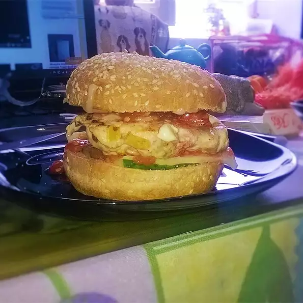

Descreption
A nice break from typical hamburgers and much healthier for you. These chicken burgers are flavorful, fairly simple to make, and quite delicious. I serve these burgers on chive biscuits with tomato chutney. Eat to your heart's content!
Ingredients
- 1 onion, chopped
- 2 teaspoons minced garlic
- 1 red bell pepper, chopped
- 1 cup fresh sliced mushrooms
- 1 tomato, seeded and chopped
- 2 carrots, chopped
- 2 pounds ground chicken
- 1 egg
- ½ cup fresh bread crumbs
- 1 tablespoon Old Bay (tm) Seasoning
- kosher salt to taste
- black pepper to taste
Steps
- STEP 1:
Preheat an outdoor grill for medium heat and lightly oil grate.
- STEP 2:
Lightly spray a saute pan with cooking or oil spray over medium heat. Saute the onion with the garlic first, then the bell pepper, then the mushrooms, tomatoes and carrots, all to desired tenderness. Set aside and allow all vegetables to cool completely.
- STEP 3:
In a large bowl, combine the chicken and vegetables. Add the egg, bread crumbs and seasonings to taste. Mix all together well and form into 8 patties.
- STEP 4:
Grill over medium heat for 5 to 6 minutes per side, or to desired doneness.